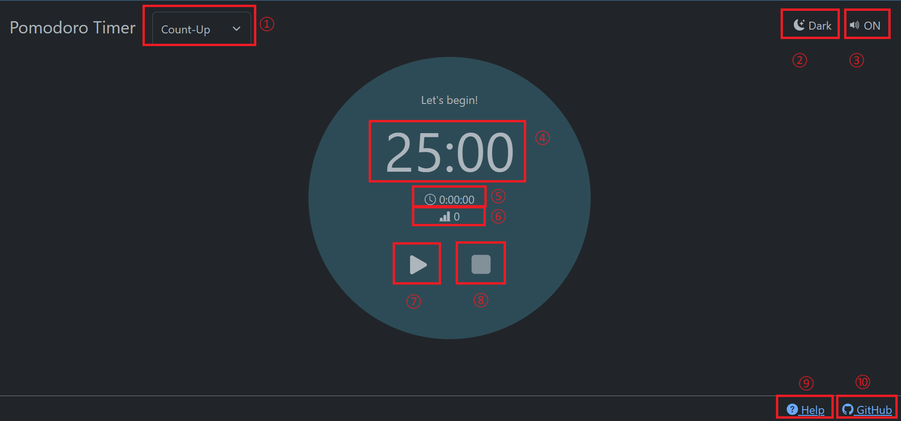
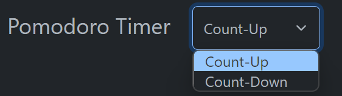
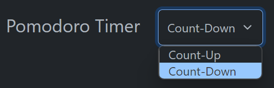
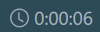
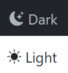

Help
Overview
"Focus shortly and deeply" is a pomodoro timer application.
You can focus on your study with a short cycle of 25min study time and 5 minutes break time.
This app has Count-Down mode for people who has already decided the number of study cycle done.
It isn't possible to switch the Count Mode after starting the timer.
Alarm will goes off when you finish the study time or break time, so you can just focus on your study.
Screen Details
- Count-Up/Count-Down dropdown button
- Color theme button(Dark/Light)
- Sound button(ON/OFF)
- Remaining Time
- Total elapsed Time
- Counter(Up/Down)
- Play button/Pausing button
- Stop button
- Help link
- Discord link (Programs is going to be published in the future. Link is currently killed.)
How to Use
Count-Up Mode
- Select Count-Up mode from dropdown menu on the left-top window. 
- Press Play button.
- Finish timer by pressing Stop button next to the Play button (Confirmation pop-up window will be displayed).
Count-Down Mode
- Select Count-Down mode from dropdown menu on the left-top window. 
- Enter the number of repetition you want to study into the input box (default number is 1), which is showed up after selecting the Count-Down Mode.
- Press Play button.
- Finish timer when you finish the designated number of repetition.
Options
Pause
Press pausing button, when you want to stop the timer temporary.
Total Study Time
Display total study time including break time.
Color Theme
You can change the color theme(Dark/Light) from the Color theme button on the right-top window.
Sound ON/OFF
Alarm sound goes off when you finish study time and break time by default.
If it isn't necessary, you can turn it off from the Sound ON/OFF button on the right-top window.